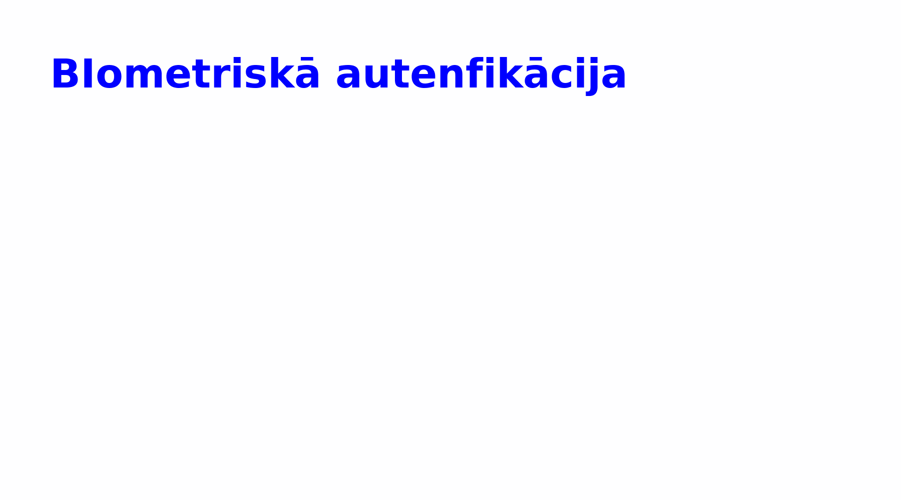
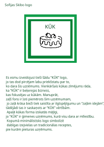
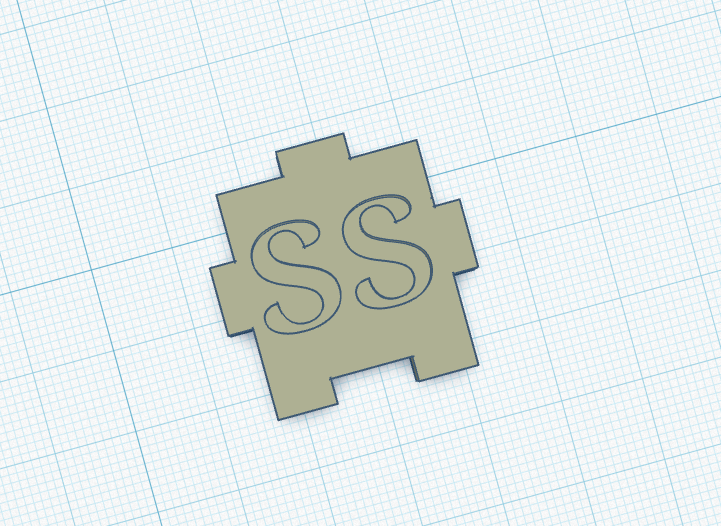
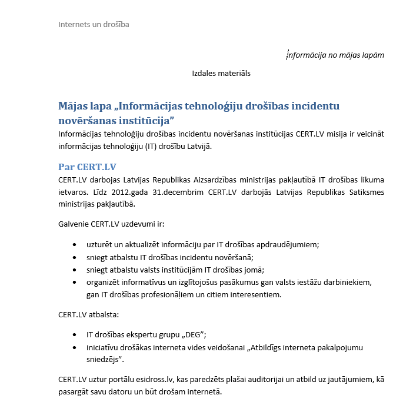

Rastrgrafika (computer graphics) ir grafiskās informācijas attēlošanas veids,
kur attēls tiek veidots no maziem pikseļiem, un katrs pikselis satur informāciju par krāsu un spilgtumu.
Tā tiek izmantota, lai digitāli attēlotu attēlus, fotogrāfijas un vizuālus elementus datorā.
GIMP ir daudzplatformu foto manipulēšanas rīks. GIMP ir GNU Image Manipulation Program akronīms.
GIMP ir piemērots dažādu foto manipulācijas uzdevumu veikšanai, tai skaitā fotogrāfiju pielabošanai,
attēla komponēšanai un atjaunošanai.
Viena no GIMP stiprajām pusēm ir tā brīvā pieejamība un savietojamība ar daudzām operētājsistēmām.
Lielākajā daļā GNU/Linux izplatījumu GIMP ir iekļauts kā standarta aplikācija.

Vektorgrafika. Inkscape
Vektorgrafika ir grafikas veids, kur attēli tiek veidoti, izmantojot matemātiskas līnijas, līknes un formas, nevis pikseļus.
Tas nozīmē, ka attēlus var palielināt vai samazināt bez kvalitātes zuduma, kas ir īpaši noderīgi logo, ilustrācijām un dizaina darbiem.
Inkscape ir bezmaksas un atvērtā koda vektorgrafikas redaktors, kas piedāvā plašas iespējas zīmēšanai,
formu veidošanai un attēlu rediģēšanai. Tas atbalsta SVG formātu un ļauj lietotājiem veidot profesionālus dizainus, izmantojot dažādus rīkus,
piemēram, Bézjē līknes un slāņus.
Inkscape ir populārs gan iesācēju, gan profesionāļu vidū, jo tas ir pieejams bez maksas un darbojas uz dažādām operētājsistēmām.

3D Kuba izdruka
Šeit mēs izmantojām lietotni Tinkercad. Tinkercad ir vienkārša un lietotājam draudzīga tiešsaistes programma 3D modelēšanai, ko bieži izmanto iesācēji un skolēni.
Tā ļauj veidot 3D objektus, izmantojot pamata formas, kuras var apvienot, pārveidot un pielāgot.
Tinkercad darbojas pārlūkprogrammā, tāpēc nav nepieciešama instalēšana, un to var izmantot jebkurā datorā ar internetu.
Papildus 3D dizainam tas piedāvā arī elektronikas un programmēšanas pamatus, kas palīdz apgūt tehnoloģijas radošā un vienkāršā veidā.
Kad katrs no mūsu grupas pabeidza savu skaldni mēs izprintējam tās 3D printerī un salikam tās kopā.

Tekstapstrāde. MS Word
Ms wordā mēs apguvām tādas prasmes kā:
Teksta ievietošana un formatēšana
Paragrāfu un līniju noformējums
Saraksti
Tabulas un attēli
Dokumenta saglabāšana

Video reklāmas veidošana
Video parāda kuba izveides procesu un reklamē biometrisku autentifikāciju. To es izveidoju lietotnē CapCut, kas bezmaksas
ļauj rediģēt video, pievienot dažādus efektus un vēl daudz ko citu.